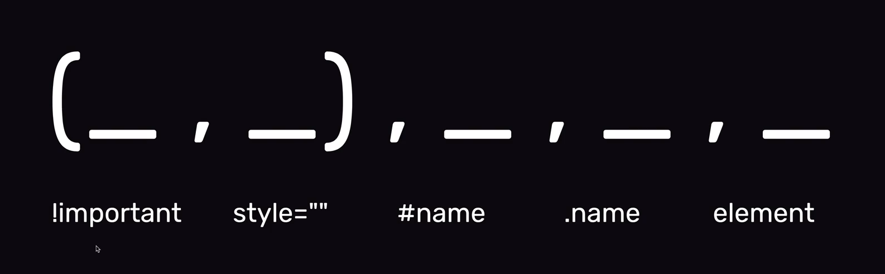

Moduł II
Podstawy HTML, CSS, Devtoolsy, Fromatowanie kodu, Algorytmy, Kanban
Budowa reguły CSS
selektor { właściwość: wartość; }
Linkowanie stylów CSS
< link href="style.css" rel="stylesheet" type="text/css" >
Podstawy HTML, CSS, Devtoolsy, Fromatowanie kodu, Algorytmy, Kanban
selektor { właściwość: wartość; }
< link href="style.css" rel="stylesheet" type="text/css" >
GIT i inne
Style inline: < znacznik style="color:yellow;" > tresc < /znacznik > Style inlinowe maja wieksze prawo dzialania niz style w pliku stylow np po id
Atrybut class="smth" do grupowania elementów. Kropka to selektor class
Innym sposobem do grupowania elementow to hash #. Ale to jest id i moze byc tylko jedno id na stronie
Pytanie do czego sie wykorzystuje id?
Reguła o nazwie important - w stylach dajemy np color:blue !important; i to nam nadpisuje style
Pytanie czy important sie stosuje do jednej wlasnosci czy mozna np w paragrafie uzyc tego jakos globalnie ze wszystkie cechy beda important bez pisania tego przy kazdej regule
Łączenie selektorow: w stylach - section a i wtedy wszystkie a w section maja dana wlasnosc lub np klasy my-article p
camelCase, kebab-case, snake_case, PascalCase
w cssie wpisujemy color: inherit;